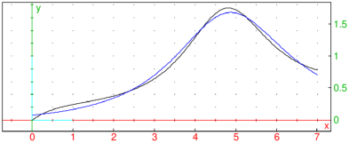
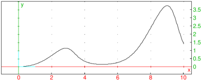

17.2.2 Rational minimax approximation
The minimax command finds
the rational function which approximates a continuous function
f:[a,b]→ℝ most closely in the sense of ℓ∞ norm.
It operates exclusively in floating-point arithmetic.
-
minimax takes three mandatory argument and a sequence of
optional arguments:
-
expr, a univariate expression representing the function f.
- x=a..b, a variable with bounds.
- deg, which is either a positive integer n or a list [n,m] where
n is a negative and m a positive integer, specifying the degrees of
the numerator (and denominator) of the approximant (by default, m=0).
- Optionally, opts, a sequence of options each of which is one of:
-
limit=maxiter, where maxiter is a positive
integer specifying the number of iterations of the Remez
algorithm (by default, maxiter=100).
- rand⟨=N⟩, where N is a positive integer specifying
the number of tries with initial node skewing (by default, N=1 and no skewing
is performed).
- threshold=tol, where tol is a real number greater than 1
specifying the terminating criterion maxx∈[a,b] e(x)<tol·minx∈[a,b] e(x) for
the Remez algorithm, where e(x)=|f(x)−r(x)| is the error function in the current iteration
(by default, tol=1.02).
- minimax(expr,x=a..b,deg ⟨,limit=maxiter ⟩)
uses the Remez method (see e.g. here)
to find the rational function r(x)=p(x)/q(x), where p is a polynomial of
degree n and q a polynomial of degree m normalized such that its trailing
coefficient is equal to 1, which minimizes the ℓ∞ error when approximating
expr on [a,b]. If r has no singularities in [a,b], then a list containing
||f−r||∞ and r(x) is returned. Otherwise, an approximation of
1/b−a∫ab|f(x)−r(x)|dx, computed by using Simpson’s rule with 20(n+m+2) steps,
is returned as the first element (this may serve as a rough estimation of fitness outside poles)
and a warning is printed in the message area.
- By specifying only the parameter n, you get an approximation of f by a polynomial.
This is faster and the result is always well-defined, but rational approximants provide more
flexibility and can be significantly more accurate even for smaller values of n and m
(these should be chosen so that r has no singularities in [a,b], however).
- With the rand⟨=N⟩ option, minimax skews the
initial (Chebyshev) nodes randomly before proceeding to the first Remez step. This may help
the algorithm to converge to a well-defined result when m>0. If N is specified,
then the entire computation is performed N times and the best result is selected.
This will be a pole-free function when possible. The rand option is usually not
needed when m=0, i.e. when the minimax polynomial is sought.
Example
Find a function of form r(x)=a2x2+a1x+a0/b2x2+b1x+b0 which is an optimal
ℓ∞-approximation of f(x)=ln(x+1)/2+sinx on the segment [0,7].
Define f by entering:
Now compute the approximation by entering:
| fit:=minimax(f,x=0..7,[2,2]) |
|
| |
| ⎡
⎢
⎢
⎣ | 0.0759657940359, | | −0.00264534091503 x2+0.0393947055011 x+0.0759192001346 |
|
| 0.0386492470797 x2−0.368513748981 x+1 |
| ⎤
⎥
⎥
⎦ |
| | | | | | | | | | |
|
To display the approximation, enter:
| tol,r:=op(fit):;
plot(ln(x+1)/(2+sin(x)),x=0..7);
plot(r,x=0..7,color=blue) |

(Here, r(x) is drawn in blue.)
You can conclude that max0≤ x≤ 7|f(x)−r(x)|=tol. Indeed:
| maximize(abs(f-r),x=0..7) |
The maximal absolute error is attained at x=3.45532968966.
As another example, consider the function f(x)=xesinx/10+7cosx for
x∈[0,10]. To show the graph, enter:
| f:=x*exp(sin(x))/(10+7*cos(x)); D:=0..10:;
plot(f,x=D) |

In the examples that follow, approximation functions are not output to save space.
To obtain the ℓ∞ error of the 15th order polynomial approximation, enter:
By requesting a rational approximant, you can achieve significantly better accuracy with
polynomials of lower degrees:
| p:=minimax(f,x=D,[8,8])[0] |
Sometimes you get poles in the approximant, for example:
Warning: the result is undefined at point(s) 3.03555290496
By using the rand option, you obtain a pole-free result:
| p:=minimax(f,x=D,[10,3],rand=30)[0] |
Evaluation time: 6.11